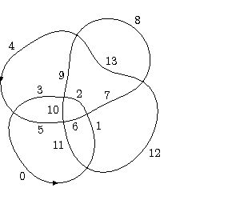
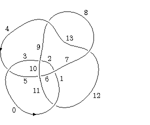
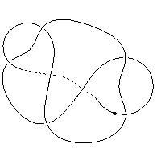
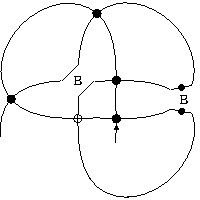

Braid v25.1 User Documentation
This document provides user instructions for A. Bartholomew's braid programme; the web-page for the programme is http://www.layer8.co.uk/maths/braids
This file contains the following main sections:
Alexander Type Invariant for Doodles
Kauffman Bracket Polynomial for Classical and Virtual Links or Knotoids
The Jones Polynomial for Classical and Virtual Links or Knotoids
Turaev's Extended Bracket Polynomial for Knotoids
Manturov's Parity Bracket Polynomial for Classical and Virtual Knots or Knotoids
Kaestner and Kauffman's Parity Arrow Polynomial for Classical and Virtual Knots or Knotoids
Kauffman's Affine Index Polynomial for Virtual Knots or Knotoids
Renumbering Labelled Peer Codes
Dowker-Thistlethwaite Code Definitions
Labelled Immersion Code Definitions
Labelled Peer Code Definitions
The braid programme was originally designed to provide a number of tasks relating to virtual, and consequently classical, braids. Coding began on 25th November 2001, initially to calculate bariad invariants based on quaternionic linear switches. It has since evolved to include tasks that relate to a variety (including virtual, welded, and flat) of knots and links but that do not involve a braid representation. However, in the absence of anything better, the name 'braid' has been retained for the programme.
The tasks provided by the programme support the following:
The programme is started by typing braid at a command prompt, a menu is then displayed that allows the user to choose which task to apply. Alternatively the programme may be started with a number of command line options to select a particular task directly. It is also possible to supply an input file containing the input to the programme that allows the programme to operate in batch mode.
Typing exit at any prompt will cause the programme to terminate.
The word help may be entered at any prompt to display a list of the command line options supported by the programme and other help information. After displaying the help information, the programme terminates.
Note: the words exit and help must be entered in lower case.
As the programme executes, a copy of the data output to the screen is placed in the file 'braid.out', created in the same directory as the one from which the programme was started. This is a normal text file that may be read with any text editor. The filename used for the programme output may be overridden by specifying the name to use in the command line
back to overall description back to top
The braid documentation and code uses the convention that braids are oriented horizontally from left to right, respecting the order in which we write braid words. Braid strands are numbered from the bottom upwards.
The programme takes as input a code describing either a braid or a diagram of a knot or link. The code for braids is just the familiar concept of braid words, and the code for a diagram may be either a labelled peer code or (for backwards compatibility) a labelled immersion code.
Since the programme deals with virtual braids, we cannot use the traditional alphabetical notation for braids. Instead we use the syntax s1, s2, s3 to denote a, b, c, and -s1, -s2, -s3 for A, B, C. This allows us to introduce virtual crossings, t1, t2, t3 etc.
Braid words are therefore entered as a contiguous list of si,-si, and ti, where i is some integer. The following are examples of braid words:
s1s1s1
-s1-s2s1t2-s1s2s1t2
s1s2-s3t1s4-s3-s2t4-s1-s3-s2t3
The programme will carry out basic error checking on the braid word supplied and will refuse to process a word that it cannot understand, displaying a message to the user.
Note: the characters s and t must appear in lower case in a braid word.
The programme determines the number of strands in a braid automatically and does not require that successive braids entered at the prompt have the same number of strands.
Braid words may be appended with additional information to the braid programme, as described in the section on braid qualifiers.
The programme accepts Dowker-Thistlethwaite codes for prime knots only. Any attempt to use a Dowker-Thistlethwaite code for another type of diagram is likey to result in a segmentation fault. The programme converts Dowker-Thistlethwaite codes into labelled peer codes automatically and proceeds with the requested task using the labelled peer code.
The programme requires Dowker-Thistlethwaite codes to be prefixed with "DT:" in order to distinguish them from other forms of input. See the section Dowker-Thistlethwaite Code Definitions.
Full details of labelled peer codes are provided in a pdf paper available from the braid programme website. Here we provide only a brief description.
A labelled peer code for a virtual (or classical) link (knot) diagram is obtained from the underlying immersion by choosing an arbitrary starting component and semi-arc and numbering each semi-arc of that component consecutively from zero as we trace around the component. When we return to the starting semi-arc we move onto another component and continue the numbering. We require that each time we start a new component we choose one that has a crossing involving a strand belonging to a component that has already been numbered. We also require that we start the numbering of the new component on a semi-arc that ensures that the first crossing we encounter involving a previously numbered strand has both an odd and an even numbered incoming semi-arc, with respect to the orientation induced by the numbering. It is always possible to construct such a numbering, as described in the document referenced above. We view the immersion as a 4-regular plane graph. The numbering results in every vertex having an even and odd numbered terminating edge and an even and odd numbered originating edge with respect to the induced orientation. The two edges terminating at a common vertex are called peer edges.
If the immersion has n vertices, the graph has 2n edges and the peer edges are of the form 2i, 2j-1 (taken mod 2n) for some integers i and j in the range 0,...n-1. The value of i determines a numbering for the vertex (and corresponding crossing) at which edge 2i terminates. We therefore refer to the even edge as the naming edge for the corresponding crossing.
Further, the peer edges will be oriented around the vertex so that the odd edge is located adjacent to the even edge in a clockwise or anticlockwise direction. We call crossings of the first type Type-1 crossings and of the second type Type-2 crossings.
The first part of a labelled peer code is comprised of a list of the odd-numbered peers in the order determined by the vertex numbering. The list is separated by commas into the peers of naming edges that are associated with the same component of the link.

For example, for the immersion and edge numbering shown in the figure above, the list of odd peers is
11 9, 3 1 13 5 7
The list of odd peers may be supplemented to record the type of each crossing by writing each odd peer associated with a Type I crossing as a negative number. Thus, for the diagram above we get
-11 9, -3 1 -13 5 -7
we refer to this code as a peer code.
The second part of a labelled peer code provides information about the original link diagram. For classical crossings we assign the label + if the naming edge forms part of the over-arc of the crossing and the label - if it forms part of the under-arc. For virtual or welded crossings we assign the label * and for flat crossings we assign the label #.
These labels are writen after the list of odd peers separated by a / character. They are written in the order determined by the vertex numbering. Thus continuing the above example if the original link diagram is as follows:

then the full labelled peer code is
-11 9, -3 1 -13 5 -7 / + - - + - + -
For the purposes of distinguishing labelled peer codes from other codes when using a computer the peer code will be enclosed in square brackets, as follows:.
[-11 9, -3 1 -13 5 -7] / + - - + - + -
A knotoid K is specified using a labelled peer code by adding a shortcut that passes everywhere under K, forming K_ in Turaev's notation. Then, K_ is a knot for which we can write the labelled peer code determined by numbering the semi-arc containing the leg of K as zero and proceeding in the direction from the leg to the head.
For a pure knotoid, we identify the first crossing introduced by the shortcut by writing a ^ symbol after the peer of the crossing's naming edge in the peer code. There is a unique semi-arc that enters this crossing as an under-arc with the orientation of K_ described above. Thus the ^ character uniquely identifies the semi-arc containing the head of K.
For example, given the following knotoid and shortcut (shown dashed)

we obtain the labelled peer code
[-7 13 -11 -1 3 -5 9^]/+ + - + + - -
For a knot-type knotoid, where the shortcut does not pass under any part of the diagram, K_ has the form of a knot with a section of the interior of edge zero replaced by a shortcut, so we indicate that the corresponding labelled peer code should be considered as a knotoid by prefixing it with 'K:'. Thus the labelled peer code
K:[3 5 1]/+++
describes the knot-type knotoid obtained from the trefoil by removing a section of the interior edge zero.Labelled peer codes may be appended with additional information to the braid programme, as described in the section on labelled peer code qualifiers.
Labelled imersion codes describe only knots and not links, so have been deprecated by labelled peer codes. However the braid programme continues to support them for backwards compatibility. Full details of labelled immersion codes are provided in a pdf paper available from the braid programme website. Here we provide only a brief description.
A labelled immersion code for a virtual (or classical) knot diagram is formed by numbering semi-arcs as in the case of labelled peer codes. The terminating edges 2i, 2j-1 at a vertex (taken mod 2n as before) determine a permutation p of the integers 0,...,n-1 given by p(i)=j.
Crossings are identified as Type-1 or Type-2 crossings as in the labelled peer code case.
The first part of a labelled immersion code comprises the permutation p, written as a product of cycles, with the integers written as negative if the corresponding crossing is Type-1. The second part of a labelled immersion code provides label information in the same manner as labelled peer codes, writen after the signed permutation separated by a / character. They are written in the order corresponding to the crossings shown in the permutation. The following is an example of a labelled immersion code for the Kishino knot K3
(-0 -2 -1 -3 -5 -4) / - + * + - *
The programme supports the standard Gauss codes based on numbering crossings and tracing around the components of a classical or virtual knot or link diagram. Gauss codes are also supported for doodles and for flat knots and links, based on the definitions given in [14].
Although Gauss codes are not quite label codes in the sense of the remainder of this section, where semi-arcs are numbered rather than crossings, the crossing numbers may be considered as labels, so they are included in this general class of input codes as far as the braid programme is concerned.
Support for standard Gauss codes was added for completeness and to aid the comparison of results produced by the programme with those from other sources. The doodle form of the Gauss code was added to facilitate calculate fixed point invariants of doodles.
Gauss codes may also be defined for knotoids and long knots and so where a programme task makes sense for these input types, it also supports Gauss codes as input.
A classical link diagram may be described using a Gauss code in which the (classical) crossings of the diagram are numbered and a code produced by following each component of the link from some arbitrary starting point, according to a given orientation. If a crossing is passed on an under-arc the crossing is written as a negative number and if the crossing is passed on an over-arc, it is written as a positive number. Multiple components are written separated by commas.
Gauss codes ignore any virtual crossings in a digram of a virtual knot. Put another way, not all Gauss codes are realizable as classical link diagrams.
To indicate the nature of each crossing, as a positive or negative crossing, we append the sign of the crossing to the Gauss code following a '/' character. Thus a Gauss code for a classical link would have the form
1 -2 5 -4 3 -5, -1 2 -3 4 / ++--+
The sign used in Gauss codes is the standard notion of a positive or negative crossing in classical knot theory. Note that this is not the same as the use of signs in labelled peer codes.
Alternatively, Gauss codes may be specified as a sequence of terms of the form (O|U)<crossing-num><crossing-sign>, e.g. O1-O2+U1-O3+O4+U2+U3+U4+
The same format may be used for virtual links by separating the crossing terms belonging to each component with a comma. An example of the Gauss code for a virtual link using the under and over format is U1+U2-,O3-,O1+O2-U3-.
The Gauss code of a doodle or flat link diagram similarly numbers the crossings of the diagram and follows each component from an arbitrary staring point. Since in these cases there are no over of under crossings in these cases, we begin by assigning an orientation to every component and respecting that choice as trace the diagram. Then, as we traverse a crossing the code records whether the other strand crosses our path from left to right or from right to left, according to the given orientation. Crossing types are then labelled with the "flat" decoration #
An example of a Gauss code for a doodle (or flat knot) is:
L1 L2 R1 R2 L3 L4 R3 R4 / # # # #
An example of a Gauss code for a flat virtual link is:
L1 R2, L3, R1 L2 R3 / # # #
To indicate that a Gauss code represents a knotoid rather than a virtual knot, the code is prefixed by "K:". When representing a knotoid with a Gauss code it is required that the segment component of the knotoid is the first component of the code and that the code starts at the leg of the knotoid. There are no requirements placed on the choice of numbering for the crossings.
Thus, an example of a valid knotoid Gauss code is:
K:5 6 -4 3 -2 -1 2 1, -3 -6 4 -5/ - - - - - -
The programme supports planar diagram descriptions of knots, links, knotoids and multi-knotoids. Currently planar diagrams are assumed to describe diagrams involving classical crossings only, there is no support for flat crossings and therefore no support for doodles. Virtual knots and links are supported, as the programme treats planar diagram descriptions as an alternative description of a Gauss code. When a planar diagram is read as input it is converted to a Gauss code automatically, so any task that may be performed on Gauss codes may be performed on planar diagrams.
Currently, only Gauss codes may be written to the programme output as planar diagrams, other code types must be converted to Gauss codes separately if a corresponding planar diagram is required.
To produce a planar diagram description of a knot, link or knotoid, the arcs between classical crossings (or the leg and head of a knotoid) are labelled sequentially from 1 as we trace each unicursal component. For virtual knots and links, the components may be considered in any order and with any chosen orientation and any arc may be chosen as the starting point for each component. There are additional requirements for knotoids, described below.
Having numbered a diagram, each crossing is described by the set of labels that appear at the crossing, using the standard convention of starting at the ingress under-arc and working anticlockwise around the crossing. The programme uses standard syntax to describe these labels; an example of the planar diagram description supported by the programme is:
X[3,1,4,2] X[4,2,5,3] X[7,6,8,5] X[6,1,7,8]
Spaces are permitted within the description and longer planar diagram descriptions may be broken across multiple lines of an input file using the escape character \ thus:
X[3,1,4,2] X[4,2,5,3] X[7,6,8,5] X[6,1,7,8]\
X[3,7,4,6] X[15,5,16,4]\
X[5,17,6,16], X[7,14,8,15] X[8,18,9,17] X[11,18,12,19] X[19,12,20,13], X[13,20,14,1]
Knotoids may be described by planar diagrams by preceding the description with "K:", as in the case of Gauss codes. For knotoids and multi-knotoids, it is required that the numbering start at the leg of the segment component of the knotoid, so that the arc containing the leg is numbered 1. It is also required that the description of the crossing involving the leg of the knotoid appear first in the list of crossings. The following is an example of a knotoid described by a planar diagram:
K:X[4,1,5,2] X[2,6,3,7] X[7,3,8,4] X[5,8,6,9] X[9,11,10,12] X[10,12,11,1]
Long knots also require special handling by some programme tasks, the prefix 'L:' being added to a labelled peer code, Gauss code or labelled immersion code to signify that it should be considered as a long knot.
back to input codes back to top
The programme can calculate a variety of polynomial invariants from braid words or a label code. These may be classified as those calculated from a quandle or biquandle determined by a switch, referred to here as switch polynomials, and those calculated using a skein formula.
The finite switch polynomial invariant, or rack polynomial, is defined for a sequence of braids B0,B1,...,Bk, where B0 is a braid on n strings and where Bk is obtained from Bk-1 by appending the positive twist sn+k-1 for k=1,...,n.
For a given finite switch the fixed point invariant Fi and writhe Wi (the number of positive braid terms minus the number of negative braid terms) is determined for each braid Bi and the resultant polynomial
F0tW0,..., FktWk
is calculated.
The number, k, of positive and negative terms to consider for the finite switch polynomial invariant is referred to as the number of rack terms. By default the braid programme sets k=n, where n is the size of finite switch being used, but it is possible to override this either on a per-braid basis by adding the braid qualifier rack-terms=k, or globally by using the command line option t=k. Setting the number of rack terms using the command line option overrides any braid qualifier specified.
In each case other than the finite-switch polynomial invariants the matrix representation of the knot or link determined by the active switch is evaluated. If a braid word is used the matrix representation is in Bn or VBn, otherwise it determines the invariant R-module described in [1]. In the case of a braid word, it is possible that the matrix representation is the identity, in which case the calculation stops since the braid is indistinguishable from the unkot (or unlink).
Assuming the matrix representation is not the identity, the programme calculates Delta0, the 0th ideal polynomial, equal to det(M-I) if M is in Bn or VBn and det(M) otherwise. The value of Delta0 is displayed and then the programme proceeds to calculate Delta1, the 1st ideal polynomial (see [1]), regardless of the value of Delta0.
If required, the z option may be supplied to the programme so that Delta1 is only calculated if Delta0 is zero.
Note that in the case of matrix-switch representations and Weyl algebra switch representations we are frequently working with multivariate polynomials and so only a set generators of Delta1 may be calculated. In the Burau, Alexander or quaternionic cases we work with single variable polynomials, so the highest common factor of the set of Delta1 generators is calculated.
If the programme is being run interactively, the user is prompted for a braid word or labelled immersion code, once entered the programme will calculate the ideal polynomials as described above and present the user with a prompt for another braid word or labelled immersion code. The user may type exit at this prompt to leave the programme.
Most of the Weyl algebra switch invariants are always calculated with coefficients mod p for some prime. For others polynomial invariants, calculating mod p is an option, as described in the section Calculating mod p. A description of the Weyl algebra case may be found in the section Weyl algebra Switches.
With all the polynomial invariant tasks, the programme operates with an active switch: a finite switch, a linear switch as defined in [1], or a commutative automorphism switch.
A finite switch S of order n is a permutation of Xn x Xn written S(x,y) = (yx,xy), where yx is the "up action" and xy is the "down action". These switches are specified as two n x n matrices, row by row in the usual manner, with elements in Xn.
The specification of S alone is sufficient to handle classical knots. For virtual or welded knots or doodles, if only S is specified, then the default twist T(x,y)=(y,x) is used for virtual or welded crossings. If required the braid programme may be given a non-default twist T, that is another switch with the property T2 = I. As with S, a non-default twist is specified as a pair or matrices, representing the up and down action.
As described in the section Switch Definitions the specification of finite switches includes the nature of those switches, as an essential virtual pair suitable for application to classical or virtual knots, as an essential welded pair suitable for application to welded knots, or as an essential doodle pair suitable for application to doodles.
The braid programme checks the stated type of active switches against the type of each braid to ensure that an appropriate switch pair is used for each type of braid.
The Burau switch is the only linear switch, as defined in [1], with entries in a commutative ring R. It is defined by the matrix:
This version of the Burau switch is also referred to as the generalized Alexander biquandle, so the Burau representation calculated by the programme is the generalized Alexander polynomial. The Burau switch is also used when the alexander option is requested via a command line option. For the Alexander case, the variable s in the Burau switch is set to 1 before displaying Delta0; in both the Burau and Alexander cases the variable s is set to 1 before evaluating Delta1.
For the case of a non-commutative ring, as described in [5], given a 2x2 matrix
where A-1 is invertible and where the fundamental equation[B,(A-1)(A,B)]=0,
is satisfied, then S satifies the conditions of [1] to be a linear switch with C and D determined by A and B as follows:
C=A-1B-1A(1-A) D=1-A-1B-1AB;
thus we may identify switches by specifying suitable A and B.
The default quaternionic switch is the "Budapest switch", determined by the matrix:
Other quaternionic switches may be specified in an input file.
Matrix switches are elements of a ring of nxn matrices with polynomial entries. The default matrix switch is the "three-variable" switch determined by the matrices
and
Other matrix switches may be specified in an input file.
Weyl algebra switches, which are described in [6], are based on nxn matrix representations of an extended Weyl algebra determined by invertible elements u and v in a commutative ring with the relation
uv-vu=1.
The quantum Weyl algebra described in [6] is also supported. Quantum Weyl algebra switches are based on nxn matrix representations of the quantum Weyl algebra, which is determined by invertible elements u and v in a commutative ring with the relation
uv-qvu=1.
The default Weyl algebra switch is that determined by a 3x3 matrix representation of an extended Weyl algebra over a field of characteristic 3, given by the matrices
and
Given matrix representations U and V of a Weyl algebra we set
A = V-1U-1 and B=U,
then proceed from the fundamental equation (see [6] for details).
Other Weyl algebra switches may be specified in an input file.
A commutative automorphism switch,S , is the switch map of a sideways biquandle F(b,a) = (ab, ba), ab = \phi(a)-\phi(b)+\psi(b), ab = \psi(a), where \phi and \psi are commutative automprphisms of an abelian group. In other words, S is the sideways map of the F-biquandle F(b,a).
Given a linear switch
,
if B is multiplied by a commuting variable t and C is multiplied by the inverse of t, we obtain another switch, denoted S[t], and say that S is augmented by t. In the case of a non-commutative ring, the fundamental equation is satisfied by A and Bt and the formulae for C and D produce the augmented switch S[t].
Adding the variable t can sometimes provide additional useful information but can also make the calculations unmanagably large. The programme therefore provides the option for including the variable or not, see the section on command line options and switch definitions.
The variable t is not used with the Burau or Alexander switches, these switches are based on the matrices shown above. By default quaternionic switches have the variable t added, matrix and Weyl algebra switches do not. See the above sections for details of how to override this default behaviour.
For a linear switch the matrix representation of the virtual braid group Bn for the braid is obtained by letting si represent the matrix
Si=Ii-1xSxIn-i-1,
where I is the identity matrix and S is the active switch. Similarly, -si represents the matrixS-1i=Ii-1xS-1xIn-i-1,
where S-1 is the inverse of S, and ti represents the matrixTi=Ii-1xTxIn-i-1,
where T is the "twist matrix"The matrix representation of the braid is then the product of the corresponding Si, S-1i, and Ti.
In addition to handling closed knots the braid programme is able to calculate polynomial invariants of virtual (hence classical) long knots. These are viewed as (virtual) closed knots on S2 with a mid-point of a semi-arc being chosen as the point at infinity.
The switch polynomial invariants calculated for long knots are two of the co-dimension zero mu-determinants described in [7]. The programme calculates both p(0) and op(0) (the determinant of the presentation matrix for the invariant module having generator x0 set to zero). The third invariant described in [7] is that of the closure of the long knot. This is not calculated explicitly by the programme since it already handles closed knots: two separate inputs are therefore required to calculate all three, one for the two long-knot specific invariants and one for its closure.
Given our view of long knots as closed knots on S2, we may describe them using labelled peer codes or Gauss codes by adopting the convention that the code starts at the semi-arc that contains the point at infinity. This is consistent with the usual definition of a Gauss code for a long knot.
To specify that a labelled peer code, a Gauss code or a planar diagram represents a long knot rather than a closed knot, the code is prefixed with L:, the detailed semantics for which are given in section Long Knot Definitions. As noted above, to calculate the full set of invariants described in [7] two input codes are required, this may be achieved by using the same labelled peer code prefixed one with the long-knot specifier L: and one without.
If a long knot is specified using a labelled peer code, the programme supports moving the point at infinity so that it is considered to belong to any semi-arc, not just the one labelled zero by the given code. Moving the point at infinity can be useful, since different invariants are calculated for long knots dependent on the choice of infinity. The syntax for long knots given in section Long Knot Definitions allows the point at infinity to be moved forwards or backwards by a number of semi-arcs with respect to the orientation determined by the labelled peer code.
back to matrix representations back to top
The Alexander type invariant for doodles [19] is not really a switch polynomial but the similarities it has with them has suggested that it be treated as such. The polynomial is supported for braid words and labelled peer codes qualified with the doodle qualifier, when used with the alexander programme option.
The "homfly" function uses the skein relation
a^-1 P(L+) - a P(L-) = z P(L0)
P(unknot) = 1
to determine the HOMFLY polynomial of a supplied braid word, using the number of bad crossings as the induction variable. This choice of skein relationship was made to be consistent with the polynomials given by Chuck Livingston's calculator at http://www.indiana.edu/~knotinfo/.
A crossing is bad if it is first encountered on an under-arc, and is good if it is first encountered on an over-arc. If a classical braid has no bad crossings, following the braid according to its orientation means one is always decending, i.e. it is the unlink.
The HOMFLY polynomial was implemented in the hope that it might be extended to virtual knots, so far this has not been achieved.
Although there are many implementations of the Kauffman bracket polynomial, as defined in [8], the one here arose from the code required to calculate Turaev's extended bracket polynomial for knotoids, so it seemed natural to include the original bracket polynomial as well.
This implementation takes as input either a labelled peer code a Gauss code or a planar diagram and supports classical and virtual knots, links or (multi-)knotoids.
By default, the normalized version of the bracket polynomial is calculated but, if required, adding the no-normalize-bracket option as a command line option or as an input file option produces the non-normalized version.
Similarly, by default, the calculation of the parity bracket polynomial expands the loop delta -A2-A-2 but, if required, adding the no-expanded-bracket option as a command line option or as an input file option causes the programme to represent delta using the single variable D.
Details of the programme's calculation of the bracket polynomial may be obtained by using the # summary debug option.
The Jones polynomial is determined from the Kauffman bracket polynomial, so it's inclusion was an immediate consequence of Kauffman polynomial. It takes the same labelled peer code, Gauss code or planar diagram input as the Kauffman bracket polynomial calculation.
Details of the programme's calculation of the Jones polynomial may be obtained by using the # summary debug option.
Turaev's extended bracket polynomial is defined in [9] for classical and virtual (multi-)knotoids, which are represented diagramatically as the immersion of the interval [0,1] together with zero or more copies of the 1-sphere into the interior of a surface whose only singularities are double points endowed with over/under-crossing data.
The extended bracket polynomial implementation accepts labelled peer codes, Gauss codes or planar diagram input. Gauss codes and planar diagrams are converted to labelled peer codes by the implementation, since it requires to track shortcut crossings that are not described by Gauss codes or planar diagrams. Knotoids are specified as described in the sections Labelled Peer Codes for Knotoids, Planar diagram description of knotoids and Gauss codes for knotoids.
By default, the normalized version of the extended bracket polynomial is calculated but, if required, adding the no-normalize-bracket option as a command line option or as an input file option produces the non-normalized version.
Similarly, by default, the calculation of the extended bracket polynomial expands the loop delta -A2-A-2 but, if required, adding the no-expanded-bracket option as a command line option or as an input file option causes the programme to represent delta using the single variable D.
Details of the programme's calculation of the extended bracket polynomial may be obtained by using the # summary debug option.
The arrow polynomial, as defined for a variety of knots in [15], [16] [17] and [18], is supported for labelled peer codes, Gauss codes or planar diagrams. The sections on long knots and knotoids describe the appropriate syntax definitions for those categories of knots.
By default, this implementation of the arrow polynomial follows [18]: the number of loop delta -A2-A-2 terms associated with a state is the number of components not containing any surviving cusps after, and those components that do retain one or more pairs of surviving cusps after reduction are assigned only the appropriate variable Ki or Lambdai.
If the alternative convention (as orginally described in [15]) is desired, where the number of loop delta terms is one less than the number of state components, then adding the zig-zag-delta option as a command line option or as an input file option includes delta in addition to the Ki or Lambdai variables.
By default, the normalized version of the arrow polynomial is calculated but, if required, adding the no-normalize-bracket option as a command line option or as an input file option produces the non-normalized version.
Similarly, by default, the calculation of the arrow polynomial expands the loop delta -A2-A-2 but, if required, adding the no-expanded-bracket option as a command line option or as an input file option causes the programme to represent delta using the single variable D.
Details of the programme's calculation of the arrow polynomial may be obtained by using the # summary debug option.
Manturov's parity bracket polynomial ([20],[16],[18]) is supported for classical or virtual knots and knotoids. Irreducible graphical components resulting from the bracket states may be considered as minimal virtual doodles, possibly containing Reidemeister I monogons. This allows them to be represented and compared by evaluating their unoriented left-preferred Gauss data, which is invariant under isotopy of S2.
Internally, the implementation maintains and manipulates irreducible graphical components as labelled peer codes, which allows the handling of virtual crossings and knotoid shortcuts. Unoriented left preferred Gauss data is then calculated from the final form of these peer codes. By adding the show-parity-peer-codes option as a command line option or as an input file option, the programme displays both the unoriented left-preferred Gauss data and the corresponding labelled peer code.
The parity bracket polynomial implementation accepts labelled peer codes, Gauss codes or planar diagram input. Gauss codes and planar diagrams are converted to labelled peer codes by the implementation, since the implementation tracks virtual and shortcut crossings as part of any graphical components yielded by the calculation and these are not described by Gauss codes or planar diagrams.
By default, the normalized version of the parity bracket polynomial is calculated but, if required, adding the no-normalize-bracket option as a command line option or as an input file option produces the non-normalized version.
The implementation follows the approach of [16] and [18], including a loop delta -A2-A-2 for each non-graphical component of a smoothed state.
By default, the normalization of the parity bracket polynomial follows the calculations shown in the appendix of [18] and uses the even writhe (that is the sum of the signs of the even crossings). If required, adding the no-even-writhe option as a command line option or as an input file option causes the programme to use the full writhe, summing the signs of all crossings, as described in the text of [18] and in other descriptions of the parity bracket polynomial.
Similarly, by default, the calculation of the parity bracket polynomial expands the loop delta -A2-A-2 but, if required, adding the no-expanded-bracket option as a command line option or as an input file option causes the programme to represent delta using the single variable D.
Details of the programme's calculation of the parity bracket polynomial may be obtained by using the # summary debug option.
Kaestner and Kauffman's parity arrow polynomial ([18]) is supported for classical or virtual knots and, with a relaxation of conditions, classical or virtual knotoids. As with the parity bracket polynomial, irreducible graphical components are represented by unoriented left-preferred Gauss data, augmented for the parity arrow polynomial with a set of "zig-zag counters". In the case of knots, described in [18], the zig-zag counters record the number of surviving cusps on each arc of the diagram, written as a sequence of integers in parentheses after the Gauss data, corresponding to the terms in the Gauss data, with the counters for each unicursal component separated with a comma. Thus, the irreducible graph L1 L2, R1 R2 (1 1, 0 0) describes a graphical component with two unicursal components, including an irreducible cusp on the arc terminating at crossing 1 having left parity (the L1 term) and one on the arc terminating at the L2 term.
The parity arrow polynomial implementation accepts labelled peer codes, Gauss codes or planar diagram input, with Gauss codes and planar diagrams being converted to labelled peer codes by the implementation. As with the parity bracket polynomial, internally the implementation maintains irreducible graphical components as labelled peer codes and by adding the show-parity-peer-codes option as a command line option or as an input file option, the programme displays both the unoriented left-preferred Gauss data and the corresponding labelled peer code.
For the parity arrow polynomial, labelled peer codes are also augmented with a sequence of zig-zag counters but in the case of peer codes, the counters are written in an order that corresponds to the cusps remaining on the even and odd terminating edges at each crossing, with the even terminating edge counts presented first. Thus, the irreducible graph [-5 -7, -1 -3]/# # * * (0 0 0 0 -1 1 0 0) has no surviving cusps on any of the even terminating edges and has one surviving cusp on the odd terminating edges at crossings zero and one. The sign associated with the counts displayed with the peer codes indicates the nature of the first cusp on the corresponding edge when traversing that edge according to the orientation induced by the edge label numbering. If the first cusp represents a turn to the left, the count is displayed as a negative integer and, if the first turn is to the right, a positive integer.
The implementation uses the same approach as for the parity bracket, including a loop delta -A2-A-2 for each non-graphical component, consistent with [18].
Details of the programme's calculation of the parity arrow polynomial may be obtained by using the # summary debug option.

In order to address this situation, we may relax the definition of an irreducible graphical component to consider only the total number of cusps on each unicursal component of the graphical component, rather than their position on the unicursal components. We may apply the same reduction relations to consecutive cusps on the same side of a unicursal component as we do with the loop components of the arrow polynomial and obtain variables similar to the Ki and Li variables for loop and segment components. To distinguish these new variables for unicursal components we write them as Ji and Mi respectively. That is, we obtain the variable Ji for a unicursal loop component of a graphical component containing 2i surviving cusps and the variable Mi for a unicursal segment component of a graphical component containing 2i surviving cusps. The graphical component is then written as a product GJiMj, where G represents the graphical component without cusps (as in the parity bracket).
Since the parity arrow polynomial is an invariant of virtual knots, and the relaxed parity arrow polynomial is obtained from the parity arrow polynomial, the relaxed parity arrow polynomial is also an invariant of virtual knots. Moreover, it is an invariant of knotoids, since the reduction of the graphical components is now equivalent to that of the parity bracket polynomial for knotoids and is well defined; likewise the variables Ji and Mi are well defined.
In the case that the irreducible graphical component contains a segment component (which may happen when evaluating the parity arrow polynomial of a knotoid), then the graphical component is referred to as open and may be regarded as a flat virtual (multi-)knotoid. If the show-parity-peer-codes option has been included, and the irreducible component may be described as a pure flat virtual (multi-)knotoid, the labelled peer code indicates the head of the knotoid with a '^' character and the zig-zag counter for the head semi-arc is shown on the undercrossing arc of the head crossing. For example the labelled peer code [-5 7^ -1 3]/# + * # (0 0 0 0 -1 1 0 -2) describes an irreducible component that may be regarded as a flat virtual knotoid, having head crossing 1 and head semi-arc 7, with one surviving cusp (representing a turn to the right) at the head of the knotoid, recorded by the value 1 in the location corresponding to the odd terminating edge at crossing 1.
In the case of an open irreducible component that may be described as a knot-type flat virtual (multi-)knotoid, the labelled peer code does not have a mechanism for distinguishing between the leg and the head, hence the use of the prefix 'K' when writing the labelled peer code. In this case, the zig-zag counters for the leg and head are both written in the location corresponding to edge zero, separated by a comma. For example, the labelled peer code K[-3 -5 -1]/# # * (0,1 0 0 0 -1 0) describes an irreducible component that may be regarded as a knot-type flat virtual knotoid, with one surviving cusp (representing a turn to the right) at the head of the knotoid (no surviving cusps at the leg), and one surviving cusp (representing a turn to the left) on edge 5, the odd terminating edge at crossing 1.
Details of the programme's calculation of the relaxed parity arrow polynomial may be obtained by using the # summary debug option.
Kauffman's affine index polynomial invariant for virtual knots is described in [10]. It is particularly useful to distinguish virtual and classical knots, since the affine index polynomial takes the value zero for a classical knot. Although it is a simple polynomial to calculate by hand for a given knot diagram, it has been added because of its ability to distinguish classical and virtual knots. However, it should be noted that there are virtual knots having zero affine index.
The fixed point invariant determined by a pair of finite switches S and T over Xn, where T2 = I, of a braid with k strings is the number of fixed points Mv=v where v ranges through all vectors in Xnk. Here M is the matrix representation of the braid determined by S and T.
When a braid is regarded as a doodle, S is a doodle switch and T is the default twist, then the fixed-point invariant of the braid is the same as the colouring number defined in [13] of the braid's closure by S. As shown in [13], the doubled colouring number of a doodle diagram by a doodle switch is the same as the colouring number of that diagram's Kamada double covering. Thus, the fixed point invariant is also capable of evaluating the double colouring number for a doodle diagram, since that diagram may converted to braid form using the vogel task (i.e using the Vogel algorithm) and the resultant braid may then have the double braid qualifier added and the fixed-point task applied.
Note that in [13] the term "doodle switch" is used to refer to a non-essential doodle switch (i.e the definition includes flat virtual switches). The braid programme requires doodle switches to be essential doodle switches (that is, ones that do not respect flat Reidemeister III moves).
This task takes the description of a diagram in the form of a labelled peer code and applies the Vogel algorithm to determine an equivalent braid word representation of the knot or link. A complete description of the Vogel Algorithm applied to both the classical and virtual case is given in [2], which is available as vogel.pdf from the braid programme website.
By default, the implementation uses classical crossings for the Reidemeister II moves introduced by Vogel's algorithm, unless all of the crossings in the input code are flat crossings, in which case it uses flat crossings. If the input code contains a mixture of flat and other crossing types, the flat programme option must be provided if it is desired to use flat crossings for these moves.
The syntax for labelled peer codes is described under the section on polynomial invariants here.
The Sawollek task evaluates the normalized Conway polynomial described in [3], taking a braid word as input. Whilst the Sawollek polynomial is actually an example of a switch polynomial, the implementation here is separate and currently supports only braid input. The reason for this is simply to avoid using the terms "Delta0" and "Delta1" in the output, which would be the case if the invariant were calculated as a switch polynomial invariant. These "Delta" terms are more applicable to quaternionic invariants and, given that other input formats may be converted to braids in advance of calculating the Sawollek polynomial, this approach seemed preferable. (It also avoided having to handle Sawolek's normalization along with the switch polynomial calculation code.) It is also the case that, with a change of variable, the Sawollek polynomial is the same as the generalized Alexander polynomial, which is available via the burau option.
The Dynnikov test uses the action defined by the braid group Bn on Z2n given by Dynnikov's formulae in [4] to determine whether the given braid is trivial.
There are several tasks in this category, used for converting one form of diagramatic representation into another, or calculating the result of some transformation performed on a diagram. These tasks take their input either from the user or from an input file.
The Dowker code calculated by the programme is the Dowker-Thistlethwaite code as used by the programme knotscape. The Dowker code option takes either a braid word a labelled peer code, or a labelled immersion code as input. In the case of braids it only yields a code if the closure of the braid is a knot, it may therefore be used as test that the closure is indeed connected.
The labelled immersion code has been deprecated by labelled peer codes but continues to be supported for backwards compatibility. Full details of labelled immersion codes are provided in a pdf document from the braid programme website, and there is a brief description in the section Labelled Immersion Code.
The labelled peer code is described in a pdf document from the braid programme website, and there is a brief description in the section Labelled Peer Code. The peer code option will determine a labelled peer code from a braid word or a labelled immersion code, or may be used to renumber a link diagram described by a labelled peer code.
The peer code option may also be used to convert Gauss codes or planar diagrams of classical, virtual or flat links, or of doodles, into labelled peer codes. The algorithm for identifying any virtual crossings that may need to be added in order to realize a given Gauss code is based on that used by Jeremy Green to produce his table of virtual knot diagrams from Gauss codes. The implementation here has been extended to minimize the number of virtual crossings added by considering all possible choices of initial crossing and optimizing the gathering of strands that match the next crossing to be added to the diagram.
The Gauss code task accepts a labelled peer code, labelled immersion code, Gauss code, planar diagram or braid word as input. The input code may describe either a classical or virtual knot or link, or a classical or virtual (multi-)knotoid. The default Gauss code task calculates the standard Gauss code based on either classical or flat crossings, together with an indication of whether the crossings are positive or negative. Virtual crossings are ignored when calculating the Gauss code. Details of the code format are given in the section Gauss Code Definitions.
The Gauss code produced by this task is based on the edge numbering described by the input code. In the case of a labelled peer code or labelled immersion code, the Gauss code is determined by starting at edge zero and following the orientation inherited by the edge labels, with the crossings numbered as in the input code. For braid input, the tracing starts at the beginning of strand zero and subsequent components enumerated by searching from strand zero sequentially for new strands that have not been traced. The crossings are numbered according to the braid terms.
If the long programme option OU-format is given, the Gauss code task writes its output codes in the "over and under" format for Gauss codes. That is, it produces a a sequence of terms of the form (O|U)<crossing-num><crossing-sign>. For example, the labelled peer code [-7 13 -11 -1 3 -5 9]/+ + - + + - - written as a Gauss code in over and under format is O1-U2-O3+U4+U5+O6+O2-U1-O4+O7-U6+O5+U7-U3+.
If the long programme option PD-format is given, the Gauss code task writes its output codes as planar diagrams. For example, the Gauss code O1-U2-O3+U4+U5+O6+O2-U1-O4+O7-U6+O5+U7-U3+ in PD-format is X[8,1,9,2] X[2,7,3,8] X[14,4,1,3] X[4,10,5,9] X[5,13,6,12] X[11,7,12,6] X[13,10,14,11]
The Gauss code task is also capable of calculating Gauss data, rather than a Gauss code by using one of the two additional options that may be included with the Gauss code task. Gauss data describes the relative orientation of the crossings that are encountered as a diagram is traced according to a given orientation. When a strand encounters a crossing, the other strand involved in the crossing will pass from the left to the right or the right to the left. To form Gauss data for a diagram, the crossings are numbered in some arbitrary manner, an orientation is assigned, a starting point for each unicursal component of the diagram chosen, and an order in which to consider the unicursal components selected. Then, by tracing the diagram according to the orientation, from the starting point on each unicursal component taken in order, the Gauss data records the crossing number and parity of the crossing in the form of an 'L' or an 'R' depending one whether the other strand at the crossing arrives from the left or the right respectively, with the terms associated with each component separated by commas.
As with the Gauss code, the evaluation of Gauss data only takes into account classical and flat crossings. It ignores virtual crossings and (in the case of knotoid peer codes) shortcut crossings. The following is an example of Gauss data for a knot with four classical or flat crossings:
L1 L2 R1 R2 L3 L4 R3 R4
In the case that all of the unicursal components of a diagram are loops, the diagram is referred to as closed. In the case that the diagram component contains a segment component (that is, it is a digram of a knotoid or a long knot), then the diagram is referred to as open.
For an open digram, Gauss data always starts with the segment component and always proceeds from the leg of a knotoid toward the head or from the left end of a long knot towards the right end. Other (loop) components have starting points and orientations chosen as above and may be considered in any order.
Adding the lpgd option as a command line option or as an input file option causes the programme to evaluate the (oriented) left preferred Gauss data, described in [14], corresponding to the orientation of the unicursal components implicitly described by the input code. The left preferred Gauss data of a diagram is Gauss data for the diagram that contains L1,...,Ln as a subsequence that is minimal, lexicographically (where L < R), amongst all such Gauss codes that respect the orientation of the diagram determined by the labelled peer code, labelled immersion code, or braid word supplied as input.
To evaluate the left preferred Gauss data we consider every possible re-numbering of the crossings. If the diagram is open, we always start with the first component as indicated by the input code (following the same convention for ordering components as used by Gauss codes above), and always consider the segment component by starting at the leg or left end, as described above.
Loop components are considered in every possible order: for each component order, each component is considered by starting at each crossing on that component. Each such component order and component cycle determines a crossing permutation that results in the 'L' instances of the Gauss data appearing in the order L1,...Ln and we apply that permutation to the 'R' instances to obtain the corresponding overall sequence. We then compare the Gauss data in each case lexicographically to determine the component order and component cycle combination that yields the minimal sequence.
In the case where the the diagram is closed, this approach will always produce a left_preferred Gauss code that starts with the term L1 (as in [14]). If the diagram is a knotoid or a long knot, this may not be the case.
Adding the ulpgd option causes the programme to evaluate the unoriented left preferred gauss data, obtained by considering the left preferred Gauss code corresponding to all combinations of unicursal loop component orientations and taking the lexicographically minimum amongst them.
By analogy to the left preferred and unoriented left preferred Gauss data, the programme supports the evaluation of an "Over preferred" Gauss code that is a unique representation of a virtual diagram, suitable for virtual knots and links, welded knots and links, virtual knotoids and multiknotoids. It mimics the left preferred Gauss code described above for doodles with preference given to over-crossings rather than under-crossings and adds a comparison of crossing signs, with positive crossings preferred to negative crossings.
The over preferred Gauss code for a diagram is one that describes the diagram containing O1, ..., On as a subsequence and is lexicographically minimal amongst all such codes.
For each given orientation of the unicursal components, all possible orderings of the components are considered and all possible starting positions around the component relative to the starting location implicit within the input code. For each combination of component ordering and starting position, a Gauss code is evaluated where the crossing numbering is determined by the order in which they are first encountered. The crossing signs are then appended and the resulting codes compared lexicographcally.
The unoriented variant of the task considers both orientations of each unicursal component in all combinations.
Adding the opgc option as a command line option or as an input file option causes the programme to evaluate the (oriented) over preferred Gauss code. Adding the uopgc option causes the programme to evaluate the unoriented over preferred gauss code
Given the labelled peer code for any kind of knot, K, and a number of strands, n, the satellite option calculates the labelled peer code of the satellite link formed by taking n concentric copies of the unlink in a solid torus and K as the companion knot before carrying out the required programme task. Therefore, if it is required just to evaluate the peer code of a satellite, the peer task should be specified.
If the writhe (sum of classical crossing signs) of K is w, the solid torus in which the n copies of the unlink are placed is twisted -2w times, which produces a satellite whose writhe is w*n. Without the twists, the writhe of the satellite would be w*n^2, and each pair of twists introduces n*(n-1) crossings of the same sign, so w*n^2-w*n(n-1) = w*n.
The satellite option may be selected for all peer codes in an input file, using the [satellite[=n]] option, or may be specified for an individual labelled peer code using the code qualifier {satellite[=n]}. In both cases, the value of n defaults to 2. If a peer code qualifier is provided, the number of strands is determined by the qualifier rather than the global option
--satellite example
[-3 5 -7 1]/- - * - {satellite=3};
It is sometimes useful to determine a labelled peer code for a link diagram that has been renumbered in some way from a labelled peer code of the original diagram. The peer code option is cable of producing a labelled peer code for the diagram obtained by moving the starting point for the numbering of each link component forwards with respect to the orientation by a number of semi-arcs.
The amount of shift for each component is specified by a shift vector giving a value for each component. The shift vector is appended to the labelled peer code input in the form of a qualifier as follows:
--link 11n455 peer code
;[-3 -21 7, 5 -15 -17, -11 -19, -13 -9 -1]/----++++++- {shift[0,2,2,0]};
A positive shift value as in the above example indicates a forwards shift of the starting point for the numbering of the corresponding component. If it is negative, it represents a forwards shift of the absolute value together with an orientation reversal.
--link 11n455 peer code
;[-3 -21 7, 5 -15 -17, -11 -19, -13 -9 -1]/----++++++- {shift[-1,-3,2,0]};
If the code represents a link and any component is shifted by an odd number of edges, we must have all intersecting components shifted by an odd number of edges, otherwise we will violate the requirement to have an odd and even edge terminating at every crossing. Since the peer code has to be connected to be realizable, this means that every component has to be shifted by an odd number of edges. Thus we have to shift every component by an odd number of edges or every component by an even number of edges.
If a component's orientation is reversed we also violate the requirement to have an odd and even edge terminating at every crossing. Therefore an orientation reversal must be accompanied by an odd shift of the component being reversed or of those other components it meets at a crossing. By considering orientation reversal an "odd" operation, a particular shift vector is valid if every entry is odd or every entry is even. Thus -2 is odd and -1 is even.
The programme may be started with a number of command line options that override the default operation and select a task directly, as follows:
braid --<task> [-<short_options>][--<long_option>][<infile>[<outfile>]]
The <task> indicates the primary task of the programme, currently the following tasks are supported:
affine-index: evaluate the affine index polynomial invariant
alexander: evaluate Alexander switch polynomial invariants
arrow-polynomial: the arrow polynomial invariant of a classical or virtual knot, link, knotoid or multi-knotoid
automorphism: evaluate a commutative automorphism switch polynomial invariant
burau: evaluate Burau switch polynomial invariants
dowker: calculate the Dowker code for the closure of the braid, provided it is a knot, or for a labelled peer code
dynnikov: carry out the Dynnikov test to determine whether the braid is trivial or not
fixed-point: evaluate the fixed-point invariant of a braid
gauss: evaluate a Gauss code of a
homfly: evaluate the HOMFLY polynomial for the closure of a braid
info: display status information (currently just the number of components) for the braid
immersion: evaluate a labelled immersion code
jones-polynomial: evaluate the Jones polynomial for a classical or virtual link
kauffman-bracket: evaluate the Kauffman polynomial for a classical or virtual link
knotoid-bracket: evaluate the Turaev extended bracket polynomial for a knotoid
matrix: evaluate matrix switch polynomial invariants
parity-arrow: evaluate Kaestner and Kauffman's the parity arrow polynomial
parity-bracket: evaluate Manturov's parity bracket polynomial
peer: evaluate a labelled peer code
quaternion: evaluate quaternionic switch polynomial invariants
rack-polynomial: evaluate the finite switch polynomial invariants
sawollek: evaluate Sawollek's normalized Conway polynomial
vogel: apply the vogel algorithm to a labelled peer code
weyl: evaluate Weyl algebra switch polynomial invariants
In fact, a <task> is just an example of a <long_option>. Any of the programme option keywords that may appear as an input file programme option may be used as a <long_option>.
The supported <short_options> are:
c[{2}]: calculate DeltaiC rather than DeltaiH for quaternionic switches
- {2} always calculate codimension 2 determinant from complex Study Delta_1
d: evaluate the Kamada double covering for braids (used only by the fixed-point task)
e: test for the switch equality condition A=D and B=C
h: display help information
I: format programme output as a valid input file
M: do not remove Reidemeister II moves when calculating labelled peer codes from braid words
N: normalize quaternionic polynomial invariants
o: display the matrix representation, M, of the braid and the elements of the adjoint adj(M-I) for the active switch
O: produce raw output (values only, no descriptive text)
p=n: calculate mod p using the given prime (no checking for primality is included)
P: display the polynomial wait indicator
R: use the rho-mapping for Study determinants
S: silent operation
t=n: set the global number of terms for finite switch polynomial invariants.
V: Do not use the t-variable with the default quaternionic switch
W[=n]: force wait information to be displayed, if n is supplied, set the wait threshold to n
z: do not calculate Delta1 when Delta0 is non-zero
Z: display Delta1 polynomials only
#: generate summary debugging information
The 'c' option has a single suboption 2, specified as c{2}
Note: the order in which the options are entered is not important, but no spaces are allowed between option characters. In particular, no spaces are allowed either side of the '=' character when wait information, or the t or p options are specified. Only one '-' character is required at the start of the options list to indicate their presence.
If an <infile> is supplied it may contain a number of braid definitions to which the chosen options are applied successively. The syntax for these is described in the section Input File Format
If an <outfile> is specified it is used to record the programme output. This overrides the default output filename braid.out.
Note: there may not be any spaces between the double inverted commas.
The c option that is used to calculate DeltaiC rather than DeltaiH for quaternionic switches, that is it calculates the GCD of the codimension 1 determinants of the complex Study matrix. It has an optional sub-option that is specified as follows: c[2]. When this sub-option is selected the programme always calculates the GCD of the codimension 2 determinates of the complex Study matrix, rather thatn following the default behaviour which is only to calculate the codimension 2 determinants if the GCD of the codimension 1 determinants is 0.
Most of the Weyl algebra switch polynomial invariants are always calculated with coefficients mod p for some prime, as described in the section Weyl algebra Switches. For other polynomial invariants, using the p=n option sets the value of the modulus to n, but note there is no check for primality. Setting the modulus causes the programme to calculate quaternions with mod p components, and polynomials with mod p coefficients.
To override the default behaviour for the default matrix and Wely algebra switches an input file must be used with the use of the variable t included in the switch specification. See the section Switch Definitions.
Due to the fact that some quaternionic switches involve processing rational numbers with very large (co-prime) numerators and denominators, the braid programme uses arbitrary precision integer arithmetic. The processing of rational arithmetic is considerably slower than normal computer based arithmetic and the arbitrary precision integers add further delay (though interestingly not as much as the rational processing). As a consequence, calculating large determinants can take a considerable length of time. Similarly, the Sawollek polynomial requires evaluating the determinant of a N-square matrix where N is twice the number of real crossings in the input braid. In both cases, the programme displays wait informaiton, or "comfort dots", that indicates the programme is actually doing something and has not stopped running!
For polynomial invariants the programme determines when it thinks it should display wait information but you can force it to be displayed by adding the W option. The Sawollek calculation relies on input from the user to produce wait information. For further control you can specify a number called the "wait threshold" that determines how frequently the programme puts out another comfort dot. The default for the wait threshold is 5, but you can set it to any value greater than 1; the lower the value the more dots you will see. The threshold actually relates to the completion of a minor in the calculation of a determinant, which is why it must be bigger than 1; if the wait threshold is n, a dot is written to the screen after each nxn minor is calculated. Comfort dots are not written to the output file.
When working with some switches, the size of the polynomials involved is very large, both in terms of the number of variables and the number of terms. Performing arithmetic operations on such polynomials can also take a long time, so it is possible to add the P option. This generates a spinning line to indicate that something is still happening. This option is independent of the comfort dots above, so the output can look a littl messy if both are selected. However, given that some calculations can take days, even on a fast machine, it is useful to have the comfort information available.
The I option causes the output from the braid programme to be formatted so that it can be saved and submitted as a programme input file. This capability was introduced for testing tasks such as the Vogel algorithm, or labelled immersion code, so that circular tests could be carried out: calculate a polynomial invariant for a set of braids, calculate their immersion code, calculate the polynomial invariant again, calculate the braid word from the labelled immersion codes, and calculate the polynomial invariant again.
back to command line options back to top
The programme is capable of generating comprehensive debugging information in a local file called braid.dbg, by including the short option #. Full details on this option may be found in the accompanying software developer notes but if the option is used by itself it will generate summary debugging information that may be useful to understand how the programme has arrived at the results it produces.
For example, to see the calculation of the (relaxed) parity arrow polynomial for the knotoid [-5 7 -9 11 -13 15^ -1 3]/+ + * + + + + +, then using the command line braid -# --parity-arrow will produce a braid.dbg file containing the following detail:
full command line: braid -# --parity-arrow braid::get_next_input_string: got string [-5 7 -9 11 -13 15^ -1 3]/+ + * + + + + + bracket_polynomial: crossing_parity: O O N E E N O O bracket_polynomial: number of odd crossings = 4 bracket_polynomial: even writhe = 0 bracket_polynomial: normalizing factor = 1 bracket_polynomial: num_state_smoothed_crossings = 2 bracket_polynomial: state -1 -1 bracket_polynomial: crossing_record (SEIFERT_SMOOTHED = 1, NON_SEIFERT_SMOOTHED = -1, VIRTUAL = 2, SHORTCUT_CROSSING = 3, ODD = 4) bracket_polynomial: crossing_record 4 4 2 -1 -1 3 4 4 bracket_polynomial: term initially set to 1 bracket_polynomial: num_delta_terms = 1 bracket_polynomial: term = -A^-2-A^2 bracket_polynomial: term before arrow_factor and parity_factor = -A^-2-A^2 bracket_polynomial: arrow_factor = 1, parity_factor = L1 L2 R1 R2, relaxed_parity_factor = M_1 bracket_polynomial: final term = -A^-2ab-A^2ab : a=L1 L2 R1 R2 b=M_1 bracket_polynomial: updated bracket_poly = -A^-2ab-A^2ab : a=L1 L2 R1 R2 b=M_1 bracket_polynomial: state -1 1 bracket_polynomial: crossing_record (SEIFERT_SMOOTHED = 1, NON_SEIFERT_SMOOTHED = -1, VIRTUAL = 2, SHORTCUT_CROSSING = 3, ODD = 4) bracket_polynomial: crossing_record 4 4 2 -1 1 3 4 4 bracket_polynomial: term initially set to A^-2 bracket_polynomial: num_delta_terms = 0 bracket_polynomial: term = A^-2 bracket_polynomial: term before arrow_factor and parity_factor = A^-2 bracket_polynomial: arrow_factor = 1, parity_factor = L1 L2 R1 R2, relaxed_parity_factor = M_1 bracket_polynomial: final term = A^-2ab : a=L1 L2 R1 R2 b=M_1 bracket_polynomial: updated bracket_poly = -A^2ab : a=L1 L2 R1 R2 b=M_1 bracket_polynomial: state 1 -1 bracket_polynomial: crossing_record (SEIFERT_SMOOTHED = 1, NON_SEIFERT_SMOOTHED = -1, VIRTUAL = 2, SHORTCUT_CROSSING = 3, ODD = 4) bracket_polynomial: crossing_record 4 4 2 1 -1 3 4 4 bracket_polynomial: term initially set to A^2 bracket_polynomial: num_delta_terms = 0 bracket_polynomial: term = A^2 bracket_polynomial: term before arrow_factor and parity_factor = A^2 bracket_polynomial: arrow_factor = 1, parity_factor = L1 L2 R1 R2, relaxed_parity_factor = M_1 bracket_polynomial: final term = A^2ab : a=L1 L2 R1 R2 b=M_1 bracket_polynomial: updated bracket_poly = 0 bracket_polynomial: state 1 1 bracket_polynomial: crossing_record (SEIFERT_SMOOTHED = 1, NON_SEIFERT_SMOOTHED = -1, VIRTUAL = 2, SHORTCUT_CROSSING = 3, ODD = 4) bracket_polynomial: crossing_record 4 4 2 1 1 3 4 4 bracket_polynomial: term initially set to 1 bracket_polynomial: num_delta_terms = 1 bracket_polynomial: term = -A^-2-A^2 bracket_polynomial: term before arrow_factor and parity_factor = -A^-2-A^2 bracket_polynomial: arrow_factor = 1, parity_factor = 1, relaxed_parity_factor = 1 bracket_polynomial: final term = -A^-2-A^2 bracket_polynomial: updated bracket_poly = -A^-2-A^2 bracket_polynomial: bracket_poly before normalizing = -A^-2-A^2 bracket_polynomial: bracket_polynomial = -A^-2-A^2
The following are valid command lines for the programme (assuming the current directory is in the search path)
braid --dowker
runs the programme to evaluate the Dowker code for the closure of a braid, or a labelled peer code, entered at the command prompt
braid --quaternion -Z fred
runs the programme to calculate just the 1st-ideal polynomial for all the braids given in the input file fred. This will use the default quaternionic switch unless directed otherwise by the input file.
braid -oW=4 fred
runs the programme to calculate the 1st-ideal polynomial for all the braids given in the input file fred, showing the matrix representations themselves and forcing the display of wait information with the wait threshold set to 4.
back to command line options back to top
An input file may be specified on the command line to provide batched input to the braid programme. An input file is a normal text file that may contain title lines, braid definitions, switch definitions, Gauss code definitions, labelled peer code definitions, labelled immersion code definitions, long-knot definitions, programme options, and may contain comments and whitespace.
An input file is first scanned for programme options, then depending on the active programme options, scanned again for switch definitions. Once all options and relevant switches have been determined the file is processed line by line looking for valid input data in the form of braid words or labelled immersion codes. Each valid programme input is then processed according to the active options; scanning for input data continues until then end of the file is reached or a line is encountered that contains only the word exit after comments have been removed.
Note: the presence of an exit line affects only scanning for braid words or labelled immersion codes. Programme options or switch definitions appearing after such a line are still processed. Use comments if you want to omit options or switches.
Any line beginning with a semi-colon is regarded as a comment. Any text after a semi-colon is also treated as a comment. When the input file is scanned, each line is read in, and inspected to see if it contains a semi-colon.If it does, the line is truncated at the first semi-colon and any text in front of the semi-colon processed as described below.
If a line in the input file begins with two consecutive dash (-) characters then the text on that line is considered by the programme to be a title for the next switch definition, braid statement, labelled peer code, labelled immersion code, Gauss code or planar diagram. When reading the input file for the next switch or input data, the programme records any titles it encounters, the last of which is associated with the next switch or data input line it finds.
Here is an example of a title line.
-- The virtual trefoil
Titles may comprise any text that usefully identifies the corresponding braid or code; notice that title lines may also contain comments, which are removed before the title is processed.
The programme will scan the input file either for the particular input types the selected task is prepared to accept (either braid words, labelled peer codes, labelled immersion codes, Gauss codes or planar diagrams) and ignores lines it is not looking for. Thus, if an input file contains both a braid word and a code for the same link, you can use the same title for each, as in the following:
-- The figure 8 knot
1 -3 4 -1 2 -4 3 -2 / ++--
-s2s1-s2s1
or use different title, like this
-- The figure 8 knot
1 -3 4 -1 2 -4 3 -2 / ++--
-- BaBa, figure 8 ; comments are not part of the title
-s2s1-s2s1
Here's an example of a title applied to a switch determined by an essential pair of finite biquandles
-- S = BQ^3_{3} T = Q^3_{1}
S=FTW 0 1 2 2 0 1 1 2 0 0 2 1 0 2 1 0 2 1 0 1 2 0 1 2 0 1 2 0 1 2 0 1 2 0 1 2
back to input file format back to top
In this context a braid definition comprises an optional list of assignment statements and a braid statement.
An assignment statement uses one of the eight word variables, w1,...w8 provided by the programme to construct complicated braid words. An assignment statement assigns to the specified word variable a string formed from elements of the form si,-si and ti for some integer i, or may reference other word variables either positively (wi) or negatively (-wi). Referenced word variables are expanded automatically when the line is processed.
Note: the word variables w1, ..., w8 must appear in lower case
Here are some valid assignment statements:
w1 = s1s2t3-s1-s2
w2 = s2w1s2w1 ;notice this assignment statement involves other word variables
w3 = -w1-w2w1w2 ;notice how this and the above line contain comments
A braid definition ends with a braid statement, which is simply a line with no assignment. A braid statement may reference word variables used previously in the same definition. For example, the above set of assignment statements could be followed by the braid statement
w3t2-w3t2
Care must be taken to define a word variable in an assignment statement before it is referenced by another assignment statement or a braid statement.
Here are some other examples of braid statements, given without the preceding assignment statements
...one or more assignment statements
w4
... one or more assignment statements
-w3-w4w3w4
... one or more assignment statements
-w3s1s2t3-s2-s1w3
... one or more assignment statements
s1s2s3
Once a braid statement is encountered, the programme checks that braid, processes it according to the active options then returns to the file to look for another braid definition. Each new braid definition in the file starts with all word variables set to the null string. There is no limit to the number of braid definitions that a file may contain.
The following simple braids are given by braid statements alone, with no assignment statements.
--virtual trefoil
s1s1t1
-- K1
s1-s2-s1t2s1s2-s1t2
-- K2
-s1-s2s1t2-s1s2s1t2
-- K3
s1s2s1t2-s1-s2-s1t2
The following braid definition generates the braid Stephen Bigelow used to prove that the Burau representation is not faithful for n=5
-- The Bigelow braid
w1=-s3s2s1s1s2s4s4s4s3s2
w2=-s4s3s2-s1-s1s2s1s1s2s2s1s4s4s4s4s4
w3=-w1s4w1
w4=-w2s4s3s2s1s1s2s3s4w2
-w3-w4w3w4
A braid word may be followed by one or more braid qualifiers that provide additional information about the braid. The following braid qualifiers are currently defined:
Braid qualifiers are specified within braces immediately following the braid statement, multiple qualifiers may be included within one pair of braces, separated by spaces, or multiple pairs of braces may be used. Here are some examples of braid qualifiers:
s1s1s1{rack-terms=4}
-s1-s2s1t2-s1s2s1t2{welded}
s1s2-s3t1s4-s3-s2t4-s1-s3-s2t3{welded,rack-terms=4}
s1s2t1t2s2s1 {flip}
s1s2t1t2s2s1 {welded}{flip}
s1s3s2s1s3s2s1s3s2{doodle}
The braid programme ignores any braid qualifiers that are irrelevant to the task in hand, for example the welded qualifier is not relevant to the calculation of a labelled immersion code, or the rack-terms qualifier is irrelevant to the determining of the Alexander polynomial.
back to input file format back to top
If a quaternionic, matrix or Weyl algebra polynomial invariant is to be calculated, the input file is scanned for switch definitions before any braid definitions are processed. Switch definitions may be used to identify one or more non-default switches to be used when processing the braids in the file. If the file contains multiple switch definitions then each switch is loaded from the file in turn and all the braids in the file processed before the next switch is loaded.
Switch definitions may be placed anywhere in the file, and they do not all have to appear in the same place.
Quaternionic switch definitions take the form of two quaternions A and B written as follows in the input file:
S= A B
The programme checks the fundamental equation is satisfied and then calculates C and D, as described in the section The Active Switch.
Each quaternion x+yi+zj+tk is written in the form (x,y,z,t)
Note: the switch indicator S may appear in either upper or lower case.
Here are some example switch definitions:
S = (1,0,0,-1) (0,1,-1,0)
S = (1,0,0,-1) (-1,1,1,-1)
S = (1,1,0,0) (0,0,0,1)
S = (1,0,0,-1) (0,1,-1,0) (0,-1/2,1/2,0) (1,0,0,-1)
S = (1,0,0,-1) (-1,1,1,-1) (-1/4,-1/4,-1/4,-1/4) (1/2,1/2,-1/2,-1/2)
S = (1,1,0,0) (0,0,0,1) (0,0,0,-1) (1,1,0,0)
Matrix switch definitions are similar to quaternionic switch definitions but now the quantities A and B are n-square matrices. They are written row by row element by element, separated by commas
S= A(0,0),...,A(0,n),...,A(n,0),...,A(n,n),B(0,0),...,B(0,n),...,B(n,0),...,B(n,n)
where A(i,j) represents the element in the ith row and jth column of A, etc.. Each element may of the matrices A and B is of the form p/q, where p and q are polynomials in an arbitrary number of variables, having integer coefficients. If q=1 then only p need be specified.
Note: polynomial variables should be entered in lower case
Since p and q have integer coefficients, the switch may be written without brackets around p and q, since the syntax is unambiguous. Thus we could write xyz-2y^2-2/2z as well as (xyz-2y^2-2)/2z
Here are some examples of matrix switch definitions:
S = a, 0, 0, a/a-1, b, c, b^2+a-1/c-ca b/1-a
S = 2, 0, x, 2, y, z, xyz-2y^2-2/2z, xz-2y/2
As with quaternionic switches the programme checks the fundamental equation is satisfied and calculates C and D as above.
There are four types of Weyl algebra switch supported by the programme: three are optimized descriptions of example algebras given in [6] and the fourth provides support for arbitrary Weyl algebras, referred to here as "custom" Weyl algebras.
In [6] an example is given of an nxn matrix representation of extended Weyl algebra over a ring of characteristic prime p, where p divides n. Examples of this class of switch may be specified in an input file using the syntax
S=WP,n,p.
Another example from [6] is a switch derived from a ring of truncated polynomials, with xn=0, over a ring of characteristic p, where p is a prime dividing n. Examples of this class of switch may be specified in an input file using the syntax
S=WT,n,p.
The third example from [6] is a switch derived from the quantum Weyl algebra. In fact, [6] gives two families of nxn matrices that give representations of the quantum Weyl algebra, the one used as the standard representation by the programme is the first family, in variables a,b,c,d,e, and q; examples of this class of switch may be specified in an input file using the syntax
S=WQ,n[,p].
Note that the quantum Weyl algebra switch is not by default calculated mod p, as is the case for the other Weyl algebra switches, hence the value of p above is optional. If it is required to calculate mod p, the appropriate value of p should be supplied with the switch, rather than with the global modulus parameter described in the section describing the mod p option.
The fourth type of Weyl algebra switch is that determined by an arbitrary (custom) extended Weyl algebra specified by two matrix representations of the generators u and v. These switches are specified in the input file using the one of the following forms
S=WUV,p,U(0,0),...,U(0,n),...,U(n,0),...,U(n,n),V(0,0),...,V(0,n),...,V(n,0),...,V(n,n).
S=WQUV,p,U(0,0),...,U(0,n),...,U(n,0),...,U(n,n),V(0,0),...,V(0,n),...,V(n,0),...,V(n,n).
S=WUVG,p,U(0,0),...,U(0,n),...,U(n,0),...,U(n,n),V(0,0),...,V(0,n),...,V(n,0),...,V(n,n).
S=WQUVG,p,U(0,0),...,U(0,n),...,U(n,0),...,U(n,n),V(0,0),...,V(0,n),...,V(n,0),...,V(n,n).
where p specifies the prime modulus to be used for the calculation. Both normal and quantum Weyl algebra representations are permitted: the U and V following the Weyl indicator W in the switch definition indicate that the switch is a custom (i.e. user defined) Weyl algebra, and the presence of a Q indicates that this is a custom representation of the quantum Weyl algebra.
The prime p indicates the modulus for the calculation, as before. In the case of a custom representation of the quantum Weyl algebra, setting p=0 indicates that the calculation should be carried out in the integers.
Weyl algebra polynomial invariants are evaluated as rationals in the form n/d, where n and d are polynomials. In some cases the polynomials are in a single variable and the generators of Delta1 always yield d as a unit. In these cases the programme can evaluate the greatest common divisor of the numerators of the Delta1 generators to give a single polynomial invariant for Delta1. This option is specified by including 'G' in the specification of the custom Weyl algebra.
For the custom Weyl algebra representations, the programme checks the relationship
UV-VU=1
for normal Weyl algebras, and the relationship
UV-qVU=1
for a representation of the quantum Weyl algebra, before proceeding with this type of switch.
Here are some examples of Weyl algebra switch definitions:
S = WP,3,3
S = WT,2,4
S = WQ,3
S = WUV,2, x, 1, 0, x, x, 0, 1, x
S = WQ,2 ,2
S=WUVG, 2, x, 1, 0, x, x, 0, 1, x
S=WQUV, 0, q, 0, 1, 1, 1/1-q, q-1/q, 0, 1/q-q^2
S=WQUVG, 3, q, 0, 1, 1, 1/1-q, q-1/q, 0, 1/q-q^2
Finite switches are identified in a similar manner to Weyl algebra switches, using additional characters to indicate the nature of the switch:
These qualifying characters are followed by the matrices for the up and down actions of the switch, given row by row. If a non-default twist is indicated, the up and down action for the T switch follows those for the S switch.
Thus, a finite switch for use with classical braids is specified as follows, if this switch is applied to a virtual braid, the default twist is used.
S = F U(0,0) U(0,1) ... U(n,n) D(0,0) ... D(n,n)
A finite switch for use with virtual braids with a non-default twist switch T is specified like this, S is specified first (U and D) T second (U' and D').
S = FT U(0,0) U(0,1) ... U(n,n) D(0,0) ... D(n,n) U(0,0) U'(0,1) ... U'(n,n) D'(0,0) ... D'(n,n)
A finite switch for use with welded braids with a non-default twist T is specified like this, a switch for use with welded braids has to be an essential welded pair.
S = FWT U(0,0) U(0,1) ... U(n,n) D(0,0) ... D(n,n) U(0,0) U'(0,1) ... U'(n,n) D'(0,0) ... D'(n,n)
A finite doodle switch for use with doodle braids with a non-default twist T is specified like this, a switch for use with doodle braids has to be an essential doodle pair.
S = FDT U(0,0) U(0,1) ... U(n,n) D(0,0) ... D(n,n) U(0,0) U'(0,1) ... U'(n,n) D'(0,0) ... D'(n,n)
In the above examples the matrix elements are separated by spaces but any non-digit character or characters may be used as element separators, with the exception of separaters containing the control characters F, T and W. The braid programme simply reads a matrix element (an integer), skips any number of non-digit charaters and reads the next element. This approach allows the user to cut and paste integer matrix descriptions from other formats, such as TeX source code.
A commutative automorphism switch is specified by giving the two matrices \phi followed by \psi, row by row, with the entries separated by columns. The nature of the switch is indicated by a "A":
S = A \phi(0,0), \phi(0,1), ... \phi(n,n), \psi(0,0), ... \psi(n,n)
For example, the switch defined by \phi = diag(x,y) and \psi = diag(z,w) is specified as follows:
S = A x,0,0,y,z,0,0,w
The entries in the matrices \phi and \psi are of the form P/Q, where P and Q are polynomials. However, complex switch definitions are likely to result in matrix representations whose determinants take an unreasonable amount of time to calculate, even given their sparse nature.
Quaternionic switches use the t variable by default, matrix and Weyl algebra switches may specify the use of an additional variable t by using the syntax S[t] = to introduce a switch. In this case B is multiplied by the additional variable t , so that C becomes multiplied by t's inverse.
Here are some examples of switch definitions specifying the use of the t variable:
S[t] = a, 0, 0, a/a-1, b, c, b^2+a-1/c-ca, b/1-a
S[t] = WP,3,3
back to input file format back to top
Standard Dowker-Thistlethwaite codes are accepted by the programme, prefixed with "DT:" to distinguish them from other forms of input. The following are valid forms of Dowker-Thistlethwaite code input:
-- Knotscape 3a-1 Rolfsen 3-1
DT:4 6 2
-- Knotscape 13n-5110
DT:8 18 14 20 26 22 6 -24 4 2 12 10 -16
-- Knotscape 16n-999998
DT:8 12 -16 24 32 22 20 28 -4 26 2 30 14 18 6 10
Gauss codes may appear in the input file, written in the form described in the section Entering Gauss Codes
For some Gauss codes, it is impractical to write the entire code on one line, so the '\' character may be used in the first part of the code to split it across multiple lines. The following are valid specifications of Gauss codes:
-- 16n96
1 2 -3 4 -5 6 -2 3 -4 7 -8 5 -6 -9 10 8 -7\
-11 12 -13 9 -10 11 -14 15 -16 13 \
-12 14 -1 16 -15 / + - - - - - - - + + + - - + - -
-- 13a121
1 -2 3 -1 4 -5 2 -3 6 -7 8 -4 5 -6 9 -10 11 -12 13 -8 7 -13 12 -9 10 -11\
/+ + + - - - + + - - - - -
-- link example
1 -2 3 -4 5 -6,\ ; note the comma must still be included
-1 -8 9 -7 -5 6 7 4 -3 2,\
8 -9 -10 11 -12 10 -11 12\
/+-++--+-----
Note: the line break caracter '\'may not appear after the '/', since the programme uses the '/' as the indication that the Gauss code is complete.
Knotoids are usually specified using labelled peer codes. In the case of a pure knotoid, a carret symbol ^ is used to identify the start of the shortcut, as described in the section Labelled Peer Codes for Knotoids. In the case of a knot-type knotoid, the peer code is prefixed with K: to indicate that it should be considered as a knotoid rather than a knot.
Knotoids may also be described using Gauss codes where appropriate to the programme task, in which case the same prefix is added to a Gauss code
The following are examples of knotoid specifications:
-- a knot-type knotoid, with a shortcut contained within semi-arc 0
K:[-7 11 13 -15 -5 1 3 9]/+ - - + + - - -
-- a pure knotoid, with a shortcut starting on semi-arc 11, that is the peer of naming edge 8, which is the over-arc at crossing 4.
[-3 -7 9 -1 11^ 5]/+ + - + + -
Labelled immersion codes have been deprecated but continue to be supported. They are written in the form described in the section Entering Labelled Immersion Codes
As with labelled peer codes and Gauss codes, labelled immersion codes may be split across multiple lines by using the '\' character in the first part of the code.The following are valid specifications of labelled immersion codes:
-- virtual figure 8
(-0 -2)(1 3) / - * - -
-- this was derived from 8n1 with some crossings made virtual
(-0 -17 -13)(-1 12 5 -14 -2 9 6 -10 3 -7 -11 16 4)(8 15)\
/ + - - + * - + + - + + - + * + - + +
-- here's the same knot written differently
(-0 -17 -13)(-1 12 5 -14 -2 9 6 -10 3 -7 -11 16 4)\
(8 15)/ + - - + * - + + - + + - + * + - + +
-- 16n30
(-0 -15 -1 -16 -25 -34 -40)\
(-2 33 17 -26 -3 39 18 -35 -4 45 19 -41 -5 30 -20 -6 22 -31 7 23 -8 -32 14 24)\
(9 -27 38 10 -36 -28 44 11 -42 29 12 21 13)(37 43)\
/ + + - - - - - - + - - - - - + + + - - - + - + - + + + + - + + + - + - + + - + + - + + - + +
Note: the line break caracter '\'may not appear amongst the after the '/', since the programme uses the '/' as the indication that the labelled immersion code is complete.
Labelled peer codes may appear in the input file, written in the form described in the section Entering Labelled Peer Codes
As with Gauss codes, labelled peer codes may be split across multiple lines by using the '\' character in the first part of the code.The following are valid specifications of labelled immersion codes:
-- virtual figure 8
[-3 5 -7 1]/- * - -
-- this was derived from 8n1 with some crossings made virtual
[-33 -23 -17 13 1 27 19 -21 29 11 -5 -31 9 -35 -3 15 7 -25]\
/ + - - + * - + + - + + - + * + - + +
-- here's an example of a link with 3 components
[-21 -11 7, 1 17 -19 -3 9, -5 -13 15]/- + + + - - + - + - -
-- 16n30
[-29 -31 -65 -77 -89 -59 -43 45 -63 53 71 83 41 17 47\
-1 -49 51 69 81 -11 25 61 15 3 -67 -5 -75 -87 23 39 \
-13 -27 33 -79 -7 -55 85 19 35 -91 -9 -57 73 21 37]\
/ + + - - - - - - + - - - - - + + + - - - + - + - + + + + - + + + - + - + + - + + - + + - + +
Note: the line break caracter '\'may not appear amongst the after the '/', since the programme uses the '/' as the indication that the labelled peer code is complete.
A labelled peer code may be followed by one or more qualifiers that provide additional information about the code. The following braid qualifiers are currently defined:
The doodle qualifier is used to specify that the Alexander type invariant for doodles is required when using the alexander programme option
Label peer code qualifiers qualifiers are specified within braces immediately following the peer code, multiple qualifiers may be included within one pair of braces, separated by spaces, or multiple pairs of braces may be used. Here are some examples of qualifiers:
[-3 -21 7, 5 -15 -17, -11 -19, -13 -9 -1]/----++++++- {shift[0,2,2,0]}
[-3 5 -7 1]/- - * - {satellite=3}
See the section Renumbering Labelled Peer Codes for more information and other examples of shift vectors.
See the section Satellites for more information about (n-parallel cable) satellites of knots.
The braid programme ignores any qualifiers that are irrelevant to the task in hand.
back to input file format back to top
Long knots, as discussed in section Long Knots, are specified in the input file using either labelled peer codes or Gauss codes, as described in sections Entering Labelled Peer Codes, Labelled Peer Code Definitions and Gauss Codes, prefixed with L:, indicating a long knot.
The following are examples of long knot specifications:
-- the fly
L:[3 5 1]/- + *
-- the dead fly
L:[-3 -5 -1]/+ - *
-- the fly with infinity moved backwards 1 edge
L:-1[3 5 1]/- + *
-- the fly with infinity moved forwards 2 edges (equivalent to the above)
L:+2[3 5 1]/- + *
Note: no spaces may appear amongst the characters between the L and the start of the code; that is, either side of the : or the specification of a new location for the point at infinity.
In addition to specifying individual long knots, when specified using labelled peer codes, the programme is capable of handling the concatenation product for long knots. An input file may specify two or more long knots to be concatenated in a single line of the input file using the ~ character to separate the factors. The syntax for each of the long knots to be concatenated is as specified above, and each may specify a shift in the point at infinity. If the point at infinity of a long knot factor is moved, the move is processed prior to the component being concatenated with the other factors.
An arbitrary number of spaces or tabs may appear either side of the ~ character but the entire concatenation specification must appear on a single line in the input file.
The following is an example of the concatenation product specification in an input file:
L:+2[-5 -9 -7 -1 -3]/+ + * + +~ L:-3[-7 -5 -9 -1 -3]/+ * + + + ~ L:[9 11 -7 -3 -5 1]/- - * - - *
Concatenation of long knots specified by Gauss codes is not currently supported.
Planar diagrams are specified as a sequence of crossings of the form X[a,b,c,d], where a is the terminating under-semi-arc at the crossing and the semi-arcs a,b,c,d are listed anticlockwise around the crossing. Following standard behaviour, the semi-arcs in a planar diagram are numbered from 1, not zero. Planar diagrams may be used to specify knots or links, knotoids or multi-knotoids
The following is a valid planar diagram specification:
-- Knotscape 10a-2 Rolfsen 10-59
X[4,2,5,1] X[2,9,3,10] X[8,3,9,4] X[10,6,11,5] X[6,14,7,13] X[14,8,15,7] X[18,12,19,11] X[12,18,13,17] X[20,15,1,16] X[16,19,17,20]
X[3,1,4,2] X[4,2,5,3] X[7,6,8,5] X[6,1,7,8]\
X[3,7,4,6] X[15,5,16,4]\
X[5,17,6,16], X[7,14,8,15] X[8,18,9,17] X[11,18,12,19] X[19,12,20,13], X[13,20,14,1]
X[4,2,5,1] X[ 2, 7, 3, 8 ]X[6 , 3 , 7 , 4] X [ 8, 6, 1, 5 ]
Knotoids may be described by planar diagrams by preceding the description with "K:". For knotoids and multi-knotoids, it is required that the numbering start at the leg of the segment component of the knotoid, so that the arc containing the leg is numbered 1. It is also required that the description of the crossing involving the leg of the knotoid appear first in the list of crossings. The following is an example of a knotoid described by a planar diagram:
K:X[4,1,5,2] X[2,6,3,7] X[7,3,8,4] X[5,8,6,9] X[9,11,10,12] X[10,12,11,1]
back to input file format back to top
In order to simplify the operation of the programme in batch mode, and to make it easy to return to an input file long after it was created, it is possible to include programme options in the input file.
Programme options are specified using keywords contained within square brackets '[]'. They may appear anywhere in the file on a separate line of their own. Multiple sets of brackets may appear in a file, and multiple options may be specified within each set of brackets, separated by a comma. Programme options may be followed by a comment on the same line.
Note: only one set of option brackets may appear on each line.
The following keywords may be used, they must appear in lower case.
affine-index: evaluate the affine index polynomial invariant
alexander: evaluate Alexander switch polynomial invariants
arrow-polynomial: evaluate the arrow polynomial invariant of a classical or virtual knot, link, knotoid or multi-knotoid
automorphism: evaluate a commutative automorphism switch polynomial invariant
burau: evaluate Burau switch polynomial invariants
complex-delta1: calculate Delta_1^C rather than Delta_1^H for quaternionic switches
delta1-only: display polynomial output for Delta_1 only
double-braid: calculate the Kamada double covering of all the braids in the input file
dowker: calculate the Dowker code for the closure of a braid or a labelled peer code of a knot
dynnikov: carry out the Dynnikov test to determine whether the braid is trivial or not
equality: test for the switch equality condition A=D and B=C
extra-output: display the matrix representation, M, of the braid and the elements of the adjoint adj(M-I) for the active switch
fixed-point: evaluate the fixed-point invariant of a braid
flat: create flat Reidemeister II moves when executing the Vogel algorithm
flip-braid: flip all the braids in the input file
format: format the output file so that it may be used as an input file later
gauss: evaluate the Gauss code of a braid
homfly: evaluate the HOMFLY polynomial for the closure of a braid
immersion: evaluate labelled immersion code
info: display status information about a braid
invert-braid: invert all the braids in the input file
jones-polynomial: evaluate the Jones polynomial
kauffman-bracket: evaluate the normalized Kauffman bracket polynomial
knotoid-bracket: evaluate the Turaev extended bracket polynomial for a knotoid
line-reflect: reflect all the braids in the file in a horizontal line drawn south of the braid
lpgd: calculate the left preferred Gauss data, rather than a standard gauss code
matrix: evaluate matrix switch polynomial invariants
mod-p=<p>: calculate mod p using the specified value for p (only used for non-Weyl algebra switches)
no_auto_delta1: only calculate Delta1 if Delta0=0 (the default is always to calculate delta_1
no-even-writhe: normalize the parity bracket polynomial with the full writhe rather than the even writhe
no-expanded-bracket: do not expand D=(-A^2-A^{-2}) in bracket polynomials
no-normalize-bracket: do not normalize bracket polynomial invariants
normalize-quaternions: normalize quaternionic polynomial invariants
opgc: calculate the over preferred Gauss code, rather than a standard gauss code
OU-format: write Gauss codes as a sequence (O|U)<crossing-num><crossing-sign>
parity-arrow: evaluate Kaestner and Kauffman's the parity arrow polynomial
parity-bracket: evaluate the normalized parity bracket polynomial
PD-format: write Gauss codes in planar diagram format
peer: evaluate labelled peer code
plane-reflect: reflect all the braids in the file in the plane of the page
power=<n>: causes the programme to evaluate the specified power of a switch and write the result to the output file
quaternion: evaluate quaternionic switch polynomial invariants
rack-polynomial: evaluate the rack polynomial for the specified braids
rack-terms=<k>: set the global value k for the number of terms used to calculate rack polynomials
raw-output: produce raw output, that is the result only without descriptive text
reflect-braid: reflect all the braids in the input file
rho: use the Study rho mapping for calculating Study determinants
satellite[=n]: calculate the peer code of the n-parallel cable satellite of a knot's peer code (default n=2)
sawollek: evaluate Sawollek's normalized Conway polynomial
show-parity-peer-codes: show peer codes in addition to unoriented left preferred Gauss codes in parity bracket polynomial output
show-varmaps: show variable mappings instead of substituting mapped variables in polynomial output
silent: do not generate any output to the command line (stdout), used for batch processing
TeX-polynomials: display output polynomials in TeX format (not supported for the Jones polynomial)
ulpgd: calculate the unoriented left preferred Gauss data, rather than a standard gauss code
uopgc: calculate the unoriented over preferred Gauss code, rather than a standard gauss code
vogel: apply the vogel algorithm to a labelled peer code
wait[=<n>]: force wait information to be displayed
weyl: evaluate Weyl algebra switch polynomial invariants
zig-zag-delta: include delta with K_i and Lambda_i variables when calculating the arrow polynomial
With the wait option, a value may also be included, wait=n, to set the wait threshold to n.
After each option from a set of option brackets is processed, the programme checks to see that conflicting options have not been specified and terminates if a conflict is found. The programme does not complain if unrelated options are specified.
The following are valid examples of lines in an input file containing options
[burau]
[burau,delta1-only] ; only display the Alexander polynomial for these braids
[quaternion,wait]
[quaternion, output, wait=10]
These programme options are in addition to any specified on the command line, the intention is to allow the user to type
braid fred
and for the file fred to contain all the required parameters. However, if fred contains only the parameter keyword burau, the command
braid -p fred
would, in addition to selecting the Burau matrix representation, only display the Alexander polynomial for the links contained in fred
back to input file format back to top
It is sometimes required to force processing of additional braid or immersion code input to stop after a certain point in the file. As input files grow in size, editing comment characters into the file can be inconvenient, so an alternative is to include a line containing just the uncommented word exit. The programme will then stop searching for input data when it reaches that point in the file.
Note that the whole file is scanned for switch data, it is only when scanning for input data that the exit line is processed.
back to input file format back to top
Finally, here is a complete example of an input file, another example is provided with distributions of the braid programme:
;Example Input File for the braid programme
;some alternative programme options, un-comment the one required
;[burau,delta1-only] ; a simple output for the Burau invariants of the braid words in the file
;[vogel] ; run the Vogel algorithm for the labelled peer codes in the file
;[weyl] ; calculate the invariants for all braid words and labelled immersion codes
; using all of the Weyl algebra switches in the file
;[matrix] ; calculate the invariants for all braid words and labelled immersion codes
; using all of the matrix-switches in the file
;First we define some quaternionic switches, note these will only be used in the quaternion case
S = (1,1,0,0) (0,0,0,1) ; this is the default quaternionic switch without the t-variable
S[t] = (1,0,0,-1) (0,1,-1,0) ; this switch specifies the use of the the variable t
-- virtual trefoil ; this is the title line
s1s1t1
; and a labelled immersion code for it
(-0 -2 -1) / - * -
;exit ; uncomment the exit on this line to terminate processing here
; in the next braid definition we have a rather trivial braid statement
-- K2
w1 =-s1-s2s1t2-s1s2s1t2 ; comments may appear on any line
w1
-- K3 ; the Kishino knot
s1s2s1t2-s1-s2-s1t2
(-0 -2 -1 -3 -5 -4) / - + * + - *
-- This braid is another example of Stephen Bigelow's
w1 =s4-s5-s2s1
w2 =-s4s5s5s2-s1-s1
w3 =-w1s3w1
w4 =-w2s3w2
-w3-w4w3w4
; Here is a classical braid, the Conway knot
s2s2s2s1-s3-s2-s2s1-s2s1-s3
; and here is the corresponging Gauss code
-1 2 -3 5 -11 1 -2 3 4 -8 9 11 -5 -6 7 -9 10 -4 6 -7 8 -10 / + + + + - - - + - + -
; Let's add a matrix switch as an afterthought
; the switch matrix switch E2, this takes a LONG time to process
S = a, 0, 0, a/a-1, b, c, b^2+a-1/c-ca, b/1-a
; Here's a Weyl algebra switch
; The switches used will depend on the command line options supplied
; or the options that are not commented out in this file.
; example Weyl switches
;S = WP,3 ,3
;S = WT,2,2
;S = WQ,2
;S = WQ,2 ,2
;S=WUVG, 2, x, 1, 0, x, x, 0, 1, x ; Note: lower case variables again
;S=WQUV, 0, q, 0, 1, 1, 1/1-q, q-1/q, 0, 1/q-q^2 ;
;S=WQUVG, 3, q, 0, 1, 1, 1/1-q, q-1/q, 0, 1/q-q^2 ;
; Here are some long knots
;-- the fly
;L:(0 2 1)/- + *
;-- the dead fly
;L:+2(0 2 1)/+ - * ; infinity moved forwards two arcs
back to input file format back to top
The first released version was 6.1.b1, supporting the Burau and quaternion matrix representations, calculation of Alexander polynomials, 0th and 1st ideal polynomials for quaternionic representations, Dynnikov test and Dowker code calculation.
Version 7.0 (not released on the web) introduced calculation of Sawollek's normalized Conway polynomial.
Version 8.0 added the Vogel algorithm for evaluating braid words from Gauss codes, the ability to include programme options in input files, the writing of an output file in "input" format, and support of the alphabetical notation for classical braids.
Version 9.0 added the Gauss code and labelled immersion code calculations. It added the calculation of DeltaiC and DeltaiR as further options to the quaternionic representations. Version 9 changed the meaning of two programme options (see below), and aligned the terminology used for the Burau and Alexander representations to that in [1]. This meant that what had previously been referred to as the Burau representation was henceforth referred to as the Alexander representation and vice versa. The term Alexander polynomial was retained for Delta_1 of the Burau representation according to common practise.
The option changes introduced in version 9 are as follows:
option old meaning new meaning new option
for old meaning
c dowker code calculate Delta_1^C d
i input as output imersion code I
Version 9.0 also extended the Vogel algorithm to handle labelled immersion code descriptions of virtual knots. This corrected an error that was found in the version 8.0 implementation of the Vogel algorithm.
Version 10 was a major update to the structure of the code, making it much more object oriented. This was partly motivated by the requirement to add support for matrix switch invariants but was also long overdue from a coding standpoint. Version 10 introduced use of the fundamental equation ([5]) to calculate C and D from A and B when evaluating switch matrices. This version also included support of a simple web interface to the programme.
Version 11 added support for Weyl algebra switches, calaulation mod p for all switches, control over the use of the variable t, and changed the default behaviour for calculating Delta1. Previous versions only calculated Delta1 when Delta0 was zero, now Delta1 is always calculated, unless the user specifies otherwise. Version 11 was also supplied with a much more feature rich web interface that allowed access to most of the common command line options.
Version 11.1 tidied up the internal structure of the code and made several behind-the-scenes changes, but did not alter the functionality from Version 11.0.
Version 11.2 added an option for the programme to report explicitly whether polynomial invariant switch elements satisfy A=D and B=C. It also corrected an error in the HTML used for the web interface that caused a problem with some browsers.
Version 12.0 introduced support for long knots, termination of further calculation of E1 generators if a unit is encountered, and added various improvements to the web interface for the programme. It also corrected an error in the calculation of Delta1 for non-commutative switches when Delta0 was non-zero (see the bug tracker below).
In version 12.0, one of the source code header files was renamed from Quaternion.h to quaternion-scalar.h. This was done to avoid a conflict with another header file quaternion.h experienced in some operating systems, such as Windows and MAC OS X.
In version 12.0, the matrix representation produced from a labelled immersion code was changed so that the switch action at a real crossing was more natural, whilst not affecting the results.
In version 12.0, the option for mapping quaternionic matrix representations into Mn(R[t,t-1]) was removed, since it proved to be of no theoretical value.
Version 12.1 was a maintenance release, see the bug tracker below.
Version 12.2 added automatic handling of the concatenation product for long knots via the # syntax in an input file.
Version 13.0 added support for the HOMFLY polynomial, and changed the command line syntax for selecting programme tasks and options.
Version 14.0 added support for the fixed-point invariant and finite-switch polynomial invariants.
Version 15.0 added the bracket polynomial for knotoids and extended the dowker code tool to accommodate labelled immersion codes as input.
Version 16.0 added support of labelled peer codes and the silent option for batch processing. The Vogel algorithm was updated to support labelled peer codes and had support for Gauss codes and labelled immersion codes removed. This reflected the cleaner structure of the January 2011 update to the Vogel algorithm.
Version 16.0 removed support for the (erroneous) Nicholson polynomial.
Version 16.1 and 16.2 (September 2011 and November 2012 respectively) added the flip-braid option and "flip" braid qualifier that renumbers the strands of a braid in the opposite order (equivalent to turning over a braid in R^3) before calculating fixed point invariants.
Version 17.0 (January 2013)added the Kauffman bracket and Jones Polynomial to the function bracket_polynomial, it also added support for Gauss codes when calculating these two polynomials, which entailed creating a modified form of the generic code data structure for Gauss codes to allow for the fact that Gauss codes describe only classical crossings and not virtual crossings. Version 17.0 also introduced support for the affine index polynomial invariant for virtual knots. A tool for converting labelled peer codes or immersion codes was added to allow testing of the affine index polynomial.
Version 18.0 (January 2015) introduced the fixed point invariant for virtual doodles and aligned the code for fixed-point invariants from [11] to [12].
Version 18.1: (March 2015) Added invert-braid, line-reflect-braid and plane-reflect-braid options and {invert, line-reflect, plane-reflect} braid qualifiers.
Version 19.0 (April 2017) added satellite knot calculation for n-parallel cables of knots.
Version 19.1 (July 2017) Modified write_gauss_code and read_gauss_code to handle doodle Gauss codes.
Version 20.0 (February 2018) Added support for commutative automorphism switches.
Version 20.1 (April 2018) Added Kamada double covering calculation for braids.
Version 21.0 (November 2019) Added support for links and multi-knotoids in bracket_polynomial, added gauss code to peer code conversion for classical links.
Version 22.0 (May 2020) Added support for the arrow polynomial for classical and virtual knots, links, long knots and long virtuals knots, knotoids and multi-knotoids. Added no-expand-bracket and no-normalize-bracket options. Added support for "An Alexander type invariant for doodles [18]. Added mapped polynomials for improved arrow polynomial presentation and to prepare for the parity bracket polynomial. Added support for knotoids to the affine index polynomial, and the Gauss code task. Added the lpgd and ulpgd options to the Gauss code task. Added the parity bracket polynomial for classical or virtual knots or knotoids. Added the parity arrow polynomial for classical or virtual knots and the relaxed parity arrow polynomial for classical or virtual knotoids.
Version 23.0 (October 2021) Updated the syntax for knot-type knotoids and long knots to be "K:" and "L:". Extended the ability to convert Gauss codes to labelled peer
codes based on Jeremy Green's algorithm for drawing virtual knots and links from Gauss codes. Added support for reading Gauss codes of the form
sequence{(O|U)
Version 24.0 (December 2021) Added the opgc and uopgc options to the Gauss code task, added OU format for Gauss code output. Added support for knotoids and long-knots to be specified via Gauss codes using the "K:" and "L:" syntax.
Version 25.0 (March 2022) Added planar diagram support as an alternative input format and the PD-format output option for Gauss codes. Added support for Gauss code and planar diagram input to the knotoid bracket, parity bracket and parity arrow polynomial tasks.
Version 25.1 (September 2022) Updated the handling of input files containing switches specifying the t-variable. Updated the behaviour of "satellite" to make it an option rather than a task, this allowed the cabling of entries in an input file prior to carrying out the specified task. Corrected an error in the Vogel algorithm, see bug tracker below. Documented the use of the Burau representation for calculating the Generalized Alexander polynomial. Updated the sawollek implementation of matrix P to be more clearly aligned with Sawollek's paper. Added draft mock Alexander option for knotoids. Added the ability to read Dowker-Thistlethwaite codes for prime knots and convert them to labelled peer codes.
back to top[1] A. Bartholomew and R. Fenn. Quaternionic Invariants of Virtual Knots and Links (J Knot Theory and Its Ramifications Vol. 17 No. 2 (2008) 231-251).
[2] A. Bartholomew. An Application of Vogel's Algorithm to Classical Links and Virtual Knots
[3] J. Sawollek. On Alexander-Conway Polynomials For Virtual Knots and Links
[4] P. Dehornoy. Braids and Self-Distributivity. Progress in Mathematics no 192 Birkha user,(2000)
[5] P. Budden and R. Fenn. The equation [B,(A-1)(A,B)]=0 and Virtual Knots and Links Fund. Math 184 (2004).19 29
[6] R. Fenn and V. Turaev. Weyl Algebras and Knots. J. Geometry and Physics 57 (2007) 1313-1324
[7] A. Bartholomew, R. Fenn, N. Kamada, S. Kamada, New Invariants of Long Virtual Knots, Kobe J. Math 27 (2010) 21-33
[8] L. H. Kauffman. Introduction to Virtual Knot Theory, arXiv:1101.0665v1
[9] V. Turaev. Knotoids, arXiv:1002.4133v4
[10] L. H. Kauffman. An Affine Index Polynomial Invariant of Virtual Knots, arXiv:1211.1601v1
[11] A. Bartholomew and R. Fenn. Biquandles and Welded Knot Invariants of Small Size (arXiv:1001.5127v1).
[12] A. Bartholomew and R. Fenn. Erratum: Biquandles of Small Size and some Invariants of Virtual and Welded Knots (J Knot Theory and Its Ramifications Vol. 26 No. 8 (2017)).
[13] A. Bartholomew, R. Fenn, N. Kamada, S. Kamada, Colorings and Doubled colorings of Virtual Doodles (arXiv:1809:04205).
[14] A. Bartholomew, R. Fenn, N. Kamada, S. Kamada, On Gauss codes of virtual doodles (Journal of Knot Theory and Its Ramifications Vol. 27, No. 11, 1843013 (2018), arXiv:1806.05885 ).
[15] H. A. Dye, L. H. Kauffman, Virtual Crossing Number and the Arrow Polynomial arXiv:0810.3858
[16] N. Gugumcu, L, H. Kauffman, New invariants of knotoids, European Journal of Combinatorics 65 (2017) 186–229
[17] L. H. Kauffman, An Extended Bracket Polynomial for Virtual Knots and Links, arXiv:0712.2546
[18] A. Kaestner, L, H, Kauffman, Parity, Skein Polynomials and Categorification, arXiv:1110.4911v1
[19] B. Cisneros, M. Flores, J. Juyumaya, C.Roque-Márquez, An Alexander type invariant for doodles, arXiv:2005.06290v1
[20] V. O. Manturov. Parity in knot theory. (Russian) Mat. Sb. 201 (2010), no. 5, 65–110; translation in Sb. Math. 201 (2010), no. 5-6, 693733.